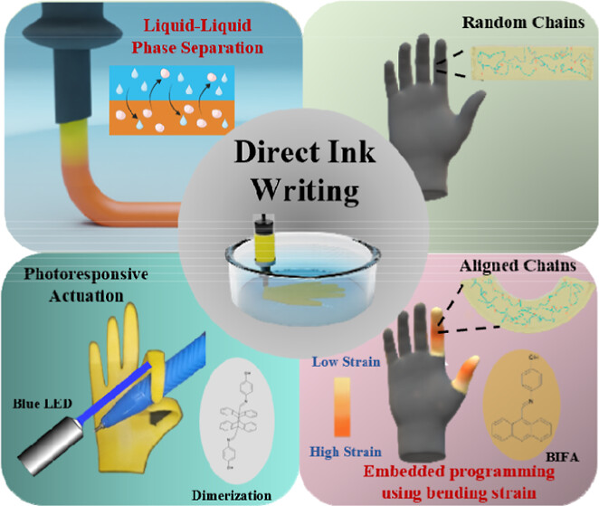
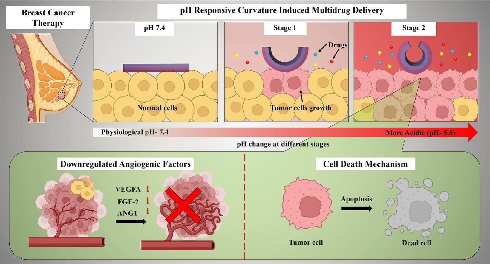
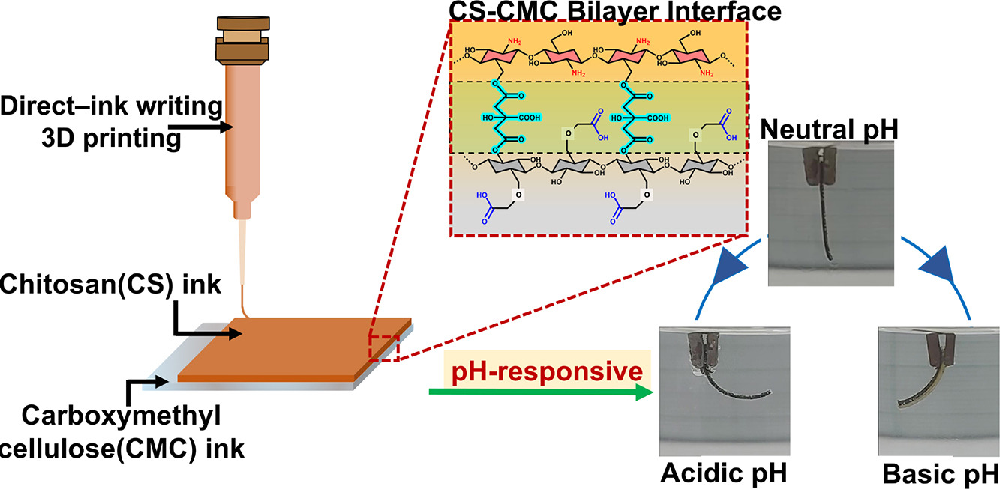
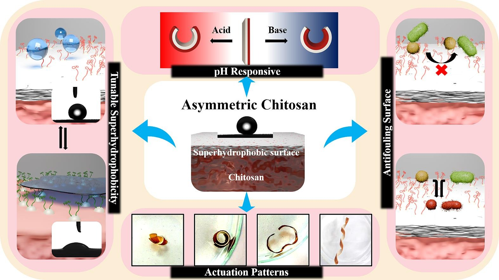
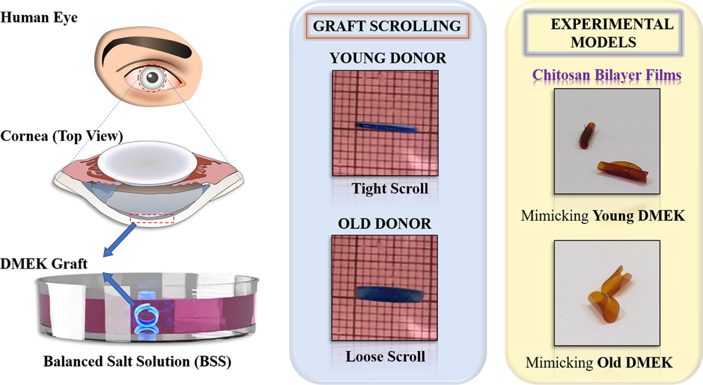
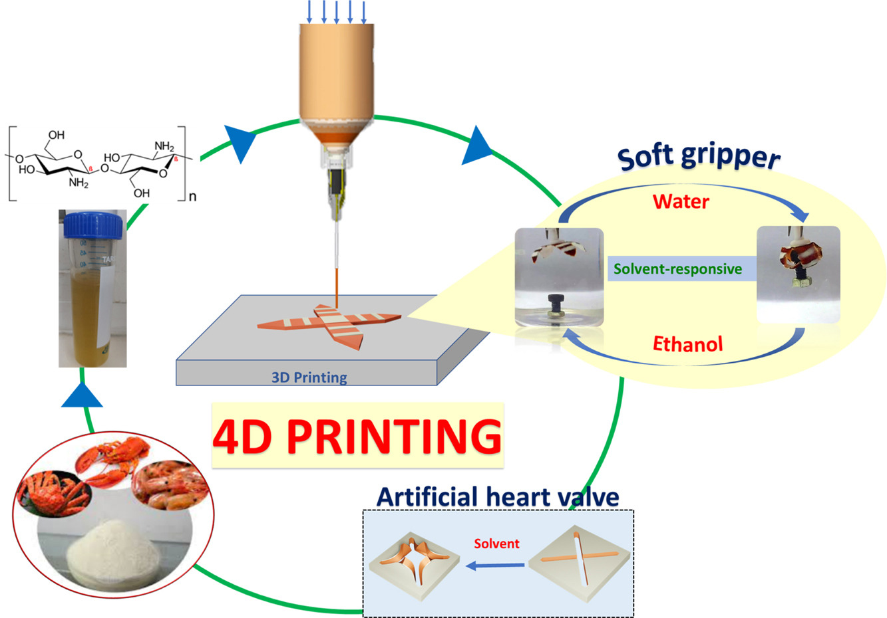
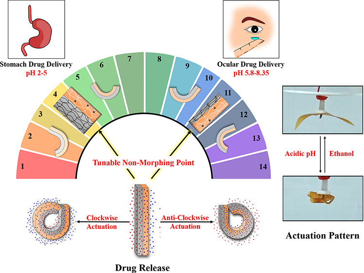

Independent Research Direction
Adaptive materials that convert environmental or biological cues into controlled actuation, molecular release, and device-level function.
Postdoctoral Researcher, Bioinspired Soft Robotics Group
I develop biodegradable (hydrogel, elastomer-based) and 4D-printed soft systems that sense, actuate, and deliver function in biological and environmental settings. My long-term goal is to build an independent research program at the interface of biomaterials, adaptive robotics, and translational biomedical engineering.
Faculty-candidate snapshot
Adaptive materials that convert environmental or biological cues into controlled actuation, molecular release, and device-level function.
Training across biotechnology, polymer science, biomaterials, 4D printing, and bioinspired robotics.
Laboratory teaching experience in genetic engineering and microbiology, plus mentoring a PhD researcher.
Collaboration with doctors and other labs to provide multidisciplinary expertise. Workshop organization and institute-level sports leadership that demonstrate initiative and team building.
Research vision
My research asks how soft materials can be programmed to interact with changing biological and environmental conditions. The work connects fundamental polymer-interface design with printable architectures and application-driven biomedical or agricultural devices.

Theme 1
Hydrogel-, elastomer-, and nanoparticle-based systems with programmable mechanics, swelling, sensing, actuation, and release behavior.

Theme 2
Covalent and supramolecular crosslinking, bilayer architectures, and particle self-assembly to control shape morphing and transport.

Theme 3
Direct ink writing, bath-assisted printing, and molding of architectures that transform over time under pH, solvent, and environmental stimuli.
Theme 4
Direct ink writing, bath-assisted printing, and molding of architectures that transform over time under pH, solvent, and environmental stimuli.
At an IIT in India, I aim to establish a lab focused on sustainable adaptive materials for biomedical devices and agri-environmental soft robotics. The group would combine polymer design, mechanics, microfabrication, and biological evaluation to create systems that are low-power, biodegradable where possible, and responsive to real deployment conditions.
Selected publications
2025 | ACS Applied Engineering Materials
Anas Saifi, Smruti Parimita, Amit Kumar, Pijush Ghosh
Read paper
2025 | International Journal of Biological Macromolecules
Amit Kumar*, Shaik Sameer Basha*, Mukilarasi B, Vimalraj Selvaraj, Pijush Ghosh, Swathi Sudhakar
Read paper
2024 | European Polymer Journal
Smruti Parimita, Amit Kumar, Hariharan Krishnaswamy, Pijush Ghosh
Read paper
2024 | Chemical Engineering Journal
Amit Kumar, Smruti Parimita, Kumari Kiran, Nitish R. Mahapatra, Pijush Ghosh
Read paper
2023 | Acta Biomaterialia
Nidhi Gupta*, Amit Kumar*, Pravin K. Vaddavalli, Nitish R. Mahapatra, Akhil Varshney, Pijush Ghosh
Read paper
2023 | Journal of Manufacturing Processes
Smruti Parimita, Amit Kumar, Hariharan Krishnaswamy, Pijush Ghosh
Read paper
2022 | ACS Applied Materials and Interfaces
Amit Kumar, Raja Rajamanickam, Joyita Hazra, Nitish R. Mahapatra, Pijush Ghosh
Read paper
Work Experience and Education
Bioinspired Soft Robotics Group, Istituto Italiano di Tecnologia (IIT), Genoa, Italy.
Mentor: Prof. Barbara Mazzolai
Nanomechanics Lab, Department of Applied Mechanics and Biomedical Engineering, Indian Institute of Technology (IIT) Madras, India.
Mentor: Prof. Pijush Ghosh
Dual Degree Interdisciplinary Research Program, Department of Biotechnology, Indian Institute of Technology (IIT) Madras, India.
Thesis: Harnessing Solvent-Responsive Actuation Behavior of Polymers for Biomedical Applications.
Supervisors: Prof. Nitish R Mahapatra (Department of Biotechnology) & Prof. Pijush Ghosh (Department of Applied Mechanics and Biomedical Engineering) CGPA: 9.75.
Department of Biotechnology, Delhi Technological University (DTU), India.
Major project on biosensors for the detection of plant toxins.
Supervisors: Prof. B. D. Malhotra (Department of Biotechnology) CPI: 70.42.
Teaching, mentoring, and training
Mentoring a PhD researcher at IIT Italy on hydrogel-powered origami actuators and environmentally triggered soft systems.
Supported undergraduate laboratory courses in genetic engineering and microbiology at IIT Madras, including experimental design, troubleshooting, and interpretation.
Mentor: Dr. G. Sumana Gajjala, Biomolecular Electronics and Conducting Polymer Research Group, NPL, CSIR.
Mentor: Dr. Aseem Bhatnagar, Department of Nuclear Medicine, INMAS, DRDO.
Recognition
Proposal "4DEX-mplant" received an evaluation score of 90.80% from the European Commission.
CertificateBest Research Publication Award from the Department of Biotechnology, IIT Madras.
CertificateRecognized for Best Doctoral Research in the Department of Biotechnology, IIT Madras.
CertificateBest Oral Presentation during Research Palooza at IIT Madras.
CertificateService and leadership
Organising the IEEE RAS RoboSoft 2026 workshop "Functional and Untethered Soft Machines Powered by the Environment" in Kanazawa, Japan.
Serving as Guest Editor for an IOP Publishing Special Issue on Soft Robots and Actuators Powered by the Environment.
Reviewer for RSC Advances, RSC Sustainability, Sustainable Food Technology, and ACS Omega.
Institute Athletics Captain, Inter IIT Polevault Record Holder (2018 - 2022) (3 Consecutive Gold Medals), Hostel Football Captain.
Talks and Presentations
Research Palooza, Applied Mechanics and Biomedical Engineering, IIT Madras.
14th International Conference on Advancements in Polymeric Materials (APM-2023), CIPET (SARP)-APDDRL, Bengaluru, India.
33rd Annual Conference of the European Society for Biomaterials (ESB-2023), Davos, Switzerland.
3D Graphy Engineering and Medical (3DGRAPHY- 2023), IIT Bombay, Maharashtra, India.
Active Polymeric Materials and Microsystems (APMM-2019), Dresden, Germany.